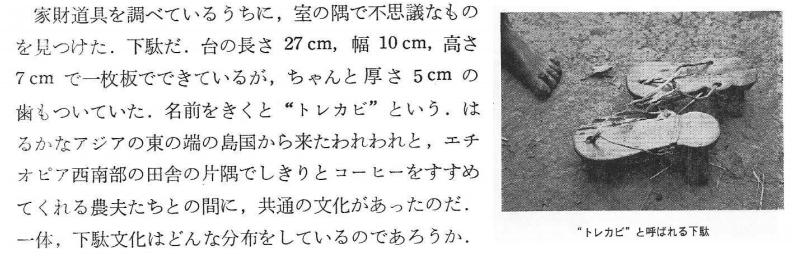

阪本寧男
阪本寧男（京都大学名誉教授、植物遺伝学）は1960年代から、ムギ類に加えて、テフやアワなどの雑穀類の原産地・栽培起源や農耕文化に関して世界各地でのフィールドワークにもとづき明らかにしてきた。また、東アジアのモチ性穀物についても優れた業績をもつ。フィールドワークでは、植物標本の作製に加え、多数の写真が撮影された。これらの写真は、植物が生育する状況を知るだけでなく、当時の現地社会の様子を知る上でも大変貴重な資料となる。そこで、京都大学地域研究統合情報センターが開発したMyDatabaseシステムを利用し、阪本寧男フィールド写真データベースを構築し、写真を現代的に利活用するための基盤整備を行った。
これらのフィールド写真やノートに関連するフィールドワークの成果は、ジャーナル「化学と生物」に「アビシニア高原栽培植物採集の旅」というタイトルの連載でも紹介されている。
例えば、トレカビと呼ばれる一枚板の下駄に関してはフィールドノートとほぼ同様の内容が(5)に掲載されているのが確認できる。 
Colophon
- 京都大学地域研究統合情報センター
- 地域情報学プロジェクト 亀田 尭宙 / 柳澤 雅之
- 教務補佐員 大岡 宰
- 同志社大学グローバル地域文化学部 王 柳蘭
- Special thanks: 阪本 寧男先生
（所属は作成当時のもの）
Contact
質問は亀田まで。